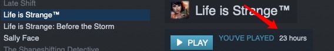
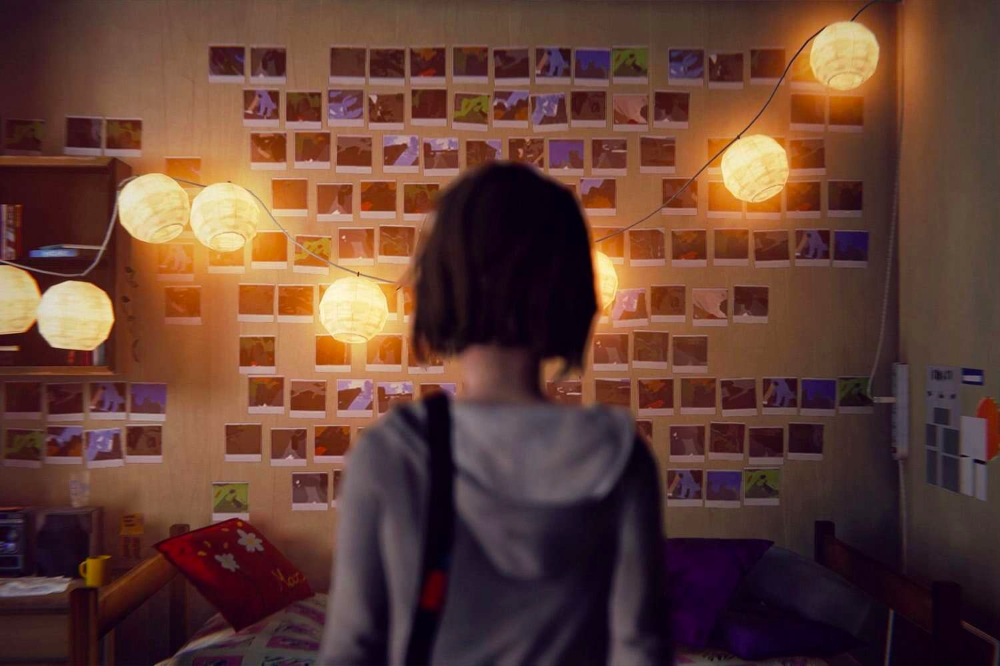

Let’s say sunshine for everyone 人们说生活总是充满阳光
But as far as I can remember 但在我的记忆中
We’ve been migratory animals 我们一直只是如野兽般流浪
Living under changing weather 四季变换，我们如常
Someday we will foresee obstacles 总有一天，我们会看见那些困难阻碍
Through the blizzard through the blizzard 在那片风雪之中，在那片风雪之后
Today we will sell our uniform 如今我们将曾经的校服变卖
Live together live together 一同离去，一同启程
$1$
最近暑假了，一直颓的很。并不想说太多，每天晚上昏睡之际眼前的火苗会在第二天早上太阳升起时熄灭，似乎也不再是什么稀罕事。不过倒是也有所收获。先是去B站看C菌的《奇异人生二·实况》，才知道有《Life is Strange》这么一款游戏，于是索性只看了《二》，自己从steam上买了第一部，津津有味地玩了起来。奈何CPU是1.8GHz的，仅达到了最低配的要求，故画面体验有些差，但倒也无妨。但或许游戏时长有点多？别人都说“15小时通关”，似乎我也是在拽平均分了。

奇怪的是一直没有官方的的汉化包（但是2和续作都有汉化包，只有1官方没发布），于是只能凭很渣的英语阅读能力来玩，中间自然也是和看《哈利波特》一样，有许多细节是看不懂的，但是95%+还是没有问题。可惜玩完之后，毕竟是12 P.M.了，不知是真的出于困倦，亦或是别的原因，我并没有什么特别的感觉，大概就是“啊，结束了”便没了后文。
之后的一天半全用来看韩剧《秘密森林》，豆瓣上9分+的悬疑力作，确实不错；但是看完到现在似乎已经过了10个小时多，自己却一点深刻的感觉也没有，仅仅也是“啊，结束了”。我逼自己在脑海里构思出过几个结论，诸如“剧情好，情节紧凑”、“主角们身上的品质值得学习”之类的老套的东西，毕竟自己不喜欢接受“我浪费了时间”这种事实。
但是我从QQ音乐上（我一直不用网易云）搜到了Life is Strange的soundtrack，听了听最后选择Cloye后的BGM，或者说谢场曲，Obstacles，渐渐地有了感觉。这时我才意识到，或许这真是一款伟大的游戏。
$2$
到现在我才发现，一个真正的爱的东西，或许一张照片就能表达，不许要各个角度的拍摄、点缀——此感慨大概是来源于我本来想把自己很有感触的片段啊、镜头啊、台词啊都整理出来，丢到博客上封存起来。但碍于自己实力不够又太懒，最终决定放弃了。当然，或许这个感慨也仅是一个心理安慰而已吧。
不知怎的，最近无论做什么事都有种“却道天凉好个秋”的感觉。纵然坐在屏幕前，单曲循环着Obstacles的我心中不断闪回无数个游戏中的镜头，我从来没意识到的感动、满足在心中游动，我却只想淡淡地描述它，仿佛真的有什么东西一说出口，就会化作烟云飘飞走，再也不回。
最后我选择了Cloye，毫不犹豫地，毁掉了小镇。大概是太感性了吧，看着C菌玩出的拯救小镇的结局最后，棺材上翩翩落下的那只蓝蝴蝶和最后的Max的笑，我感到一阵目眩。经过了23个小时的奋战，我仿佛已经和Max融为了一体：我会感叹超能力滥用的危害，我看着Cloye开心的样子自己也会喜不自胜，看到游戏中周围的场景也恨不得赶紧拍一张，也十分想拥有和Max一样的书画方式，句里话间贯穿着充满浓郁美国西部风味的笑话，但却永远不失简约和得体。我感叹自己身为Max所经历的一切，不断变换的结局，不断迎来的挑战，直到最后才发现可以改变事实的自己有多么无力，才发现Cloye活着才是我唯一想要的。无论最后Cloye是否为此牺牲了，我都会很感慨和Cloye在一起厮混、感慨我成功救下了Kate，感慨自己房间的小清新和Cloye房间的独特，感慨Max和Cloye的那种爱情和友情不断相互叠加，创造出的那种至美至真的情感。
整体上来看，这应该是个悲伤的故事——无论选哪种结局。但是或许也只有悲剧会把生活中的美好撕碎给人看，之后人们才会从那些碎片里面重新拾起向前走的动力吧。
我很想和Max和Cloye做朋友。那一定是一件很幸福的事情吧。
$3$
从现在开始，我开始很惧怕看一部新剧或者玩一部新的游戏。我害怕情节会太妙、人物会太精致导致我沉浸其中无法自拔，正如我看《哈利波特》、我看《言叶之庭》、我玩《生化危机7》、我玩Life is Strange一样，要缓好几天才能缓过来。我会泄气为什么我的生活没有那么多缤纷的元素——没有魔法、没有值得我守护的东西、没有改变时间的超能力、没有跨越鸿沟的极致爱情；我会感慨为什么我没有主人公那种超凡脱俗的品质、惊人的意志或者优秀的人际关系。仿佛每多一部文学作品，就如同我心底黑暗的夜空多了一颗星点，但我却只能蜷缩在远处黑暗的角落，瑟瑟地发着抖，看着天空中的光芒我竟会觉得刺眼，觉得避之不及。不知道什么时候，我连欣赏美好的能力都没了。
确实，虽然上文提到的Obstacles这支歌确实是Life is Strange在我心中最完美的诠释，但是我毫不留情面地把它移出了我的曲库。不在于别的，只是因为我不想再一听某首歌就有想哭的冲动，不想再听一首歌就感到自己有多么孤独。rqy口中的“早在心里哭过了”或许就是这种感觉吧。
我又能做什么呢？无论周围有多少人跟我成天开玩笑啊、斗嘴啊，我真的把他们打心底当作过理解我的人吗？我感觉自己每天就如同一座空壳一样，行尸走肉般地担心着一切。大概我是很难把心敞开给谁的把，或者即使我敞开了我也不认为自己敞开了吧；以此为理由说“大概是因为没有另一半造成的”，也不过是病急乱投医吧。我就仿佛一只迷途的小船，永远不知道自己的下一站在哪里。-
其实说到底，还是我根本不知道如何去生活。之前积累的浮躁让我不知道该如何面对平常人的生活，来到高中之后我才知道“哦，原来努力才是硬道理”。或许是rqy太强了，强到他的光芒洒在我眼前时会让我有种我也可以轻松到达那个高度的错觉——整个高一仿佛只有最后一星期不是浮躁的。
或许，我一直是个很好的$\rm{Admirator}$ (羡慕者)而不是一个好的$\rm{Doer}$(实践者)吧。
$4$
我一直想知道自己现在到底为何而活，活的意义又是什么。
放眼四周全是烟雾弥漫，我畏惧了。
或许只要我强一些，在文化课上、或者在奥赛上取得了骄人的成绩我就可以全身心投入其中一者了。但奈何实力不足，两者都不是我的拿手项。我开始慌了。之前的岁月仿佛都是虚度，自己去年多么弱，今年似乎也并没有什么实质的变化。我开始慌了。
大家都说“不能功利地搞OI啊”，周围mcfx、rqy的成功也都反复论证了这一点。但是我，我…对我而言，似乎没有比这个更高的精神动力了啊。周围异样的目光接踵而来，因为我不是强者，不可能说出什么“走自己的路，让别人说去吧”的豪言壮语——按着传统的步调都不能取胜，自己的步调大概只是飞蛾扑火吧。
我似乎觉得有些奇怪，大概自己本来就不是搞OI的人，或许是个文学家更合适；但是看到期末考试惨不忍睹的语文分数，我又迷茫了；大概自己本来就没有多努力，但是我感觉今年省选前自己已经够努力了啊，或许只是方向错了——但是方向又在哪呢，我又迷茫了。
似乎天地之大，只有我一个人整日沉浸在迷茫之中无法脱身：人与人真是不一样啊。有些人就是可以无问西东、敢想敢干；我则只会是一个杂鱼，睡死在漫无边际的冬日。
每到这个时候，我都好想逃跑，我想跑到Max和Cloye的那个小镇，和他们一起无忧无虑地活着，没有文化课的压力，没有升学的压力，没有豪言壮语的压力，没有OI的压力，就只是简单地活着……最重要的，我可以不思考我为何而活。
当然，以上都是一个高中生的无病呻吟而已。说到底，我还是没有任何勇气的蝼蚁，不知道该怎样直面生活的痛击，不知道如何自在地活，敏感，而颓废。
除了勇气，我什么都不缺。
Life is Strange，Max，Cloye，寄托着的，是我遥不可及的一个梦啊。

$5$
终于我要重新上路了，过去的快乐我想抹去，过去的心酸我想埋葬。眼泪垂青过的土地是翻上来的新泥，在心里死了好几次也必须重生。
至于文学作品，我能想到的最好的结束便是如下：
或许，
每一份精致的艺术作品都是一个有条不紊的世界；
有关那个世界的回忆，不如折叠起来，就留在那个世界吧。
是啊，Max和Cloye的故事，就留给阿卡迪亚湾和他们即将抵达的西雅图吧；秋月孝雄和雪野百香里的故事就留在那个古色古香的雨亭吧。一切的一切都是碎片，在时空里面穿行，倏而消失不见，倏而又出现在我眼前。铭记和沉沦没有意义；这个世界的一切，无论多么无聊与不可期待，明天太阳升起时，便还要继续。
意义？似乎意义这东西本身就是没有意义的。理解生命、理解生活反而是某种屈从，而真正的英雄则是命运的斗士——就好像JO5里面的主角们，坚定地举起反抗命运的大旗。
明日是否如同今日一样沉沦？我不知道。我只知道把握住下一秒就足够了。之前的生活的每一帧仿佛都像是飘在空中的泡影而已，洗刷着存在于虚妄中的记忆，一次一次，如同枷锁一样阻遏着我的前进。
所以，请君勿言什么明天更好之类的P话了，在绝望中求生才是人生的常态。就如同从峭壁中生出的兰花，挤落一捻石尘都是成功。
《随想》系列目次表：$Link$